Classification and Regression Trees (CART)
Goals
- Introduce CART (“classification and regression trees”)
- Interpret CART as a variable selection procedure for (linear or logistic) regression
- Briefly survey the zoo of related procedures
- Node purity measure
- Tree complexity
- Branching rules
Reading: The primary reading is Gareth et al. (2021) 8.1. The reading in Hastie et al. (2009) section 9.2 may also be useful. These notes are intended only as a supplement to the primary reading.
Context
Up to this point, our learning algorithms have been some modification of a linear function of a fixed set of regressors, for both regression and classification.
- We can expand the set of regressors without bound using non–linear transformations
- We can choose among them using regularization and cross–validation
A key problem: these methods require enumeration of the set of transformations in advance.
- This can be computationally prohibitive
- It is also conceptually unsatisfying
Why can’t we learn the best transformation rather than choosing it from a predetermined set?
Context
For the remainder of the class, we will study learning procedures that can be seen as determining the set of transformations algorithmically.
(They do not need to be seen this way — they can also simply be treated as distinct learning procedures in their own right.)
The increased complexity of these procedures means that:
- They will be less amenable to theoretical analysis, and
- They often take the form of a “zoo” or “menu” of similar–looking procedures offering different practical and conceptual tradeoffs.
Regression trees as partition selectors
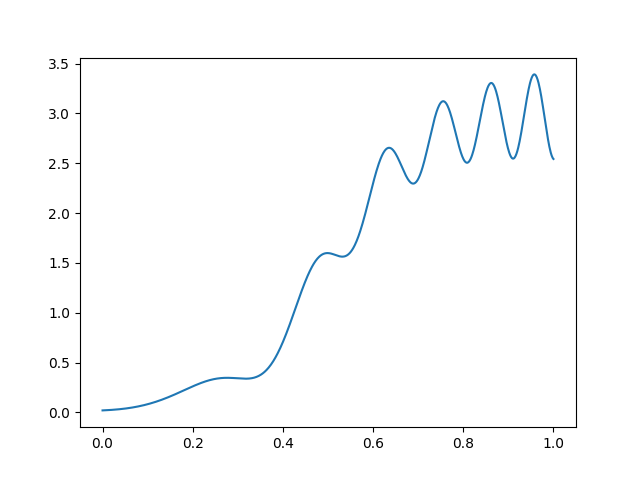
Suppose we are regressing \(y\in \mathbb{R}^{}\) on \(x\in \mathbb{R}^{}\), that \(y\) is observed without noise, and that \(y= f(x)\) looks like this.
How would you fit this function using indicator functions as regressors?
Regression trees as partition selectors
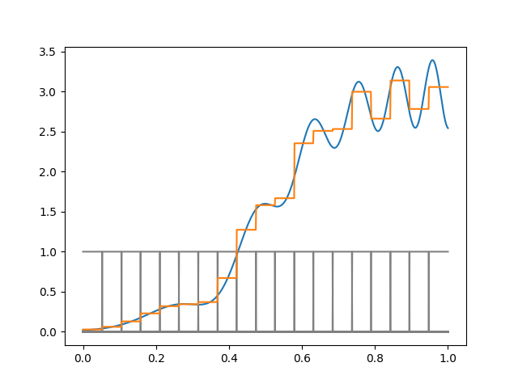
Suppose we fit this function with indicator basis functions of a fixed width \(\Delta\).
- We need a different \(\Delta\) for different parts of the space
- Any fixed \(\Delta\) will be wasteful
- We use too many indicators on the left and too few on the right
In this example we can see the right thing to do, but in high dimensions you typically can’t just look and figure this out.
Greedy partition selection
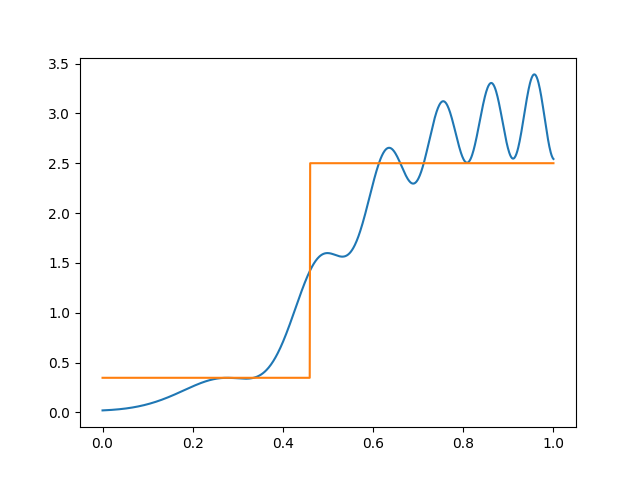
Selecting the optimal partition of a given size is computationally hard.
Regression trees are an automatic way to form indicator basis functions that do well for the function at hand.
Suppose to begin with that we are only willing to use one split. The best spot to split is the one that produces the largest decrease in squared error. This can be found by brute force just by sorting \(x\).
Greedy partition selection
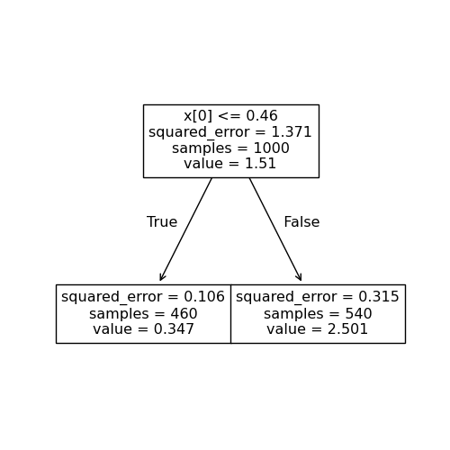
We can represent this split as a tree.
Greedy partition selection
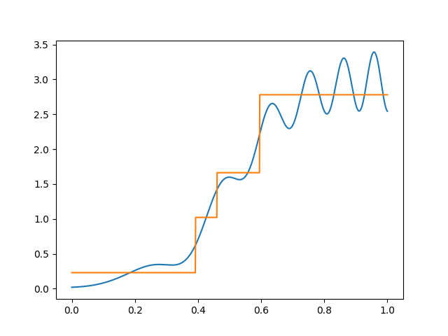
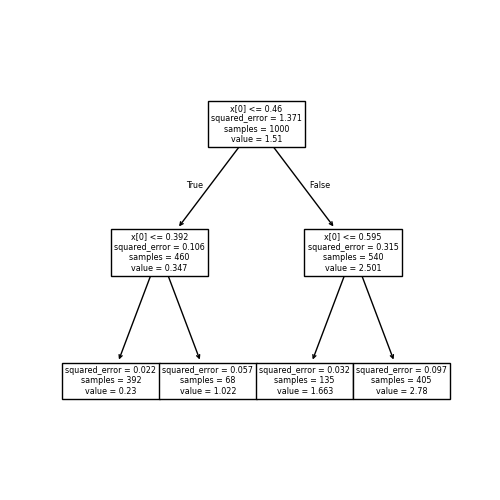
Given this first split, we can successively split the later regions, choosing the optimal split of each region at each step.
Note that if we don’t split successively, we don’t get a tree. In one dimension every partition is a tree, but in higher dimensions this isn’t true, as we’ll see below.
Greedy partition selection
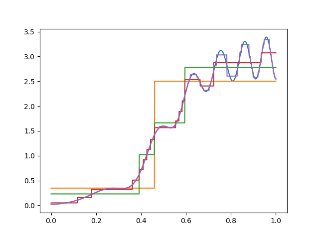
By adding more and more splits, we get more and more regions.
Here, I have split up to a depth of eight.
How many regions can a tree of depth \(d\) have? What happens to the expressivity of the function class as the depth increases?
When to stop?
You can get exponentially many regions in the depth of the tree. By default all the splits are generated — with depth \(8\) there are \(2^8\) terminal or “leaf” nodes.
As the number of splits increases, the expressivity of the tree function increases.
The rules for when to stop splitting are flexible. Common choices:
- Stop splitting when a leaf node falls beneath some number of observations.
- Stop splitting when the split is not able to achieve a particular decrease in the loss function (or, equivalently, a sufficient decrease in “node impurity” as defined below).
Tree trimming
The generated trees in our example are still not very efficient: we use more splits than are necessary on the left than on the right.
(In this case I happened to generate every possible split up to the specified depth.)
In order to choose a better tree, we “trim” the tree back by regularizing the size of the tree.
Tree trimming
Given a starting tree \(T\) and a cost complexity parameter \(\alpha\), we find the subtree \(T' \subseteq T\) that minimizes
\[ \textrm{Cost complexity empirical risk}(T') = \sum_{t\in T'} \sum_{n \in t} (y_n - \hat{y}_{t})^2 + \alpha |T'|, \]
where
- \(t\in T'\) means \(t\) is a leaf node of \(T'\),
- \(n \in t\) means \(\boldsymbol{x}_n\) is assigned to leaf node \(t\),
- \(\hat{y}_t\) is the prediction in leaf \(t\), and
- \(|T'|\) counts the number of leaf nodes.
What tree do you get with \(\alpha = 0\)? What about as \(\alpha \rightarrow \infty\)? How would you choose \(\alpha\) in practice?
Tree trimming
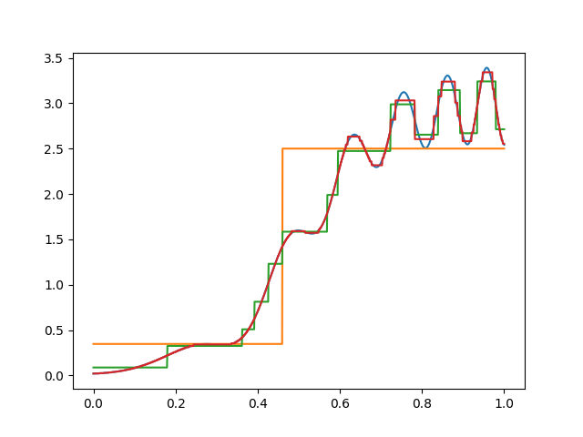
In practice, you’d choose the best \(\alpha\) using cross–validation. Here, I just picked one that looks good, since there is no noise in the data.
Tree trimming
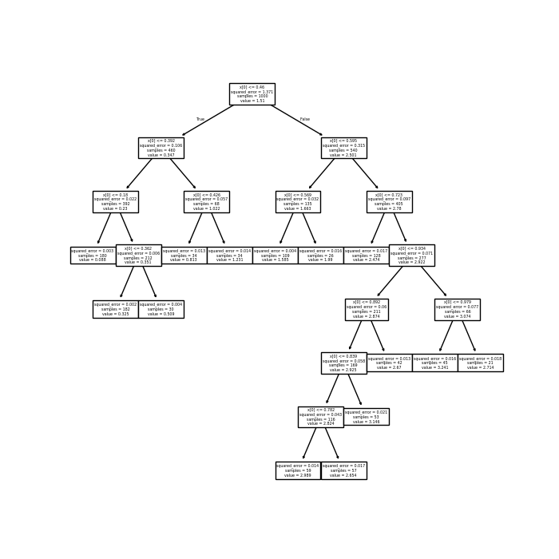
Here’s one trimmed tree for our function of interest.
Note that there’s more trimming on the left than on the right, since the function is smoother there.
In higher dimensions
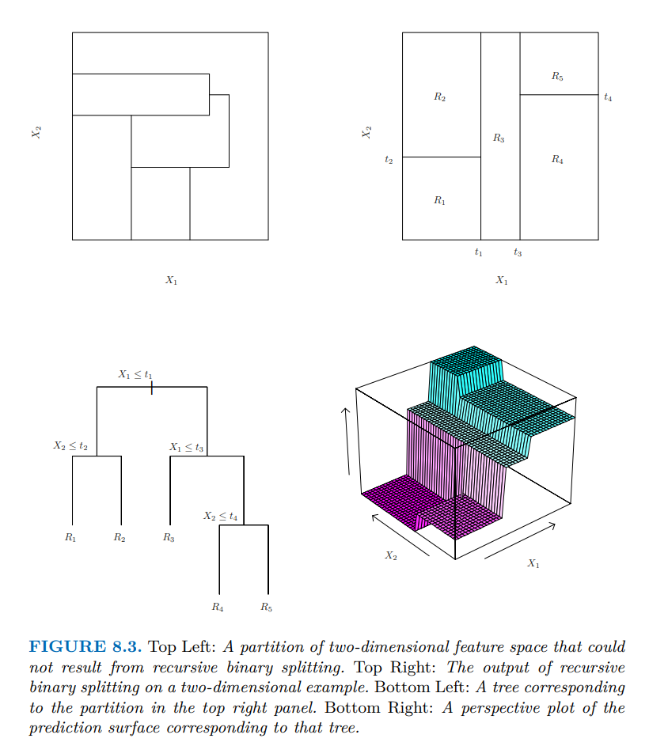
The one–dimensional example is a little misleading, since in one dimension every partition is a tree.
In higher dimensions, tree–based partitions are a subset of all partitions.
(The bottom right plot of the figure is misleading — it seems like the prediction surface slopes up between partitions, but this is only an artifact of plotting the surface on a coarse grid with automatic interpolation.)
Which of the top two partitions can be produced by a tree?
Classification trees
The above example is for regression, but trees can be used for classification as well. (The main reference is Gareth et al. (2021) chapter 8.)
Given a tree, we can produce a classifier by just taking the majority vote in the leaf.
We can also produce a probability estimate \(\hat{\pi}_t\), which is the proportion of \(y_n = 1\) among \(n \in t\).
These correspond exactly to optimizing cross–entropy or least–squares classification loss using the partition indicators as regressors.
The tree is built greedily by minimizing a notion of “node impurity” at each step. We’ll start with squared error, where the details are simplest.
Choosing a split
Suppose you are considering how to split a leaf \(t\) (applying the same reasoning to the root node tells how to start the tree). For a given regressor \(x_{nk}\), and a given split point \(c\), let
\[ \begin{aligned} N_{c}^{-} ={}& \textrm{\# of data points in $t$ with }x_{nk} < c \\ N_{c}^{+} ={}& \textrm{\# of data points in $t$ with }x_{nk} \ge c \\ N_{t} ={}& \textrm{\# of data points in $t$} \\ \bar{y}_c^- ={}& \textrm{average of $y_n$ for $n \in t$ with }x_{nk} < c \\ \bar{y}_c^+ ={}& \textrm{average of $y_n$ for $n \in t$ with }x_{nk} \ge c \\ \bar{y}_t={}& \textrm{average of $y_n$ for all $n \in t$}. \\ \end{aligned} \]
(How we break ties doesn’t matter much.)
Choosing a split
By splitting the node using \(x_{nk}\) at \(c\), the total loss changes by
\[ \underbrace{ \sum_{n \in t,x_{nk} < c} (y_n - \bar{y}_c^-)^2 + \sum_{n \in t,x_{nk} \ge c} (y_n - \bar{y}_c^+)^2 }_{\textrm{Loss after splitting}} - \underbrace{ \sum_{n \in t} (y_n - \bar{y}_t)^2 }_{\textrm{Loss before splitting}}. \]
- For each variable \(k\), the split point \(c\) can be chosen by brute force by sorting \(x_{nk}\) for \(n \in t\).
- This is computationally tractable because it’s only a one–dimensional problem.
- The CART algorithm chooses the split by optimizing over all possible choices of \(c\) and \(k\).
Can splitting a node ever increase the training loss?
Node impurity
We can rewrite the change in loss as
\[ N_c^{-} R_c^{-} + N_c^{+} R_c^{+} - N_tR_t, \]
where \(R\) measures the “impurity” of the node — in this case the within-node sample variance.
Splitting can never decrease the purity of the node, as long as the fit within the node is chosen to minimize the measure of impurity.
For classification with \(K\) classes, each estimated within the node to occur with probability \(\hat{\pi}_k\), there are different common choices for node impurity:
- Misclassification rate
- Entropy
- Gini index
Node impurity for classification
The misclassification rate is simply the proportion of observations that do not match the majority class: \(1 - \max_k \hat{\pi}_k\).
The entropy is given by
\[ \textrm{Entropy}(\hat{\pi}) = - \sum_{k} \hat{\pi}_{k} \log \hat{\pi}_{k}. \]
The Gini index is
\[ \textrm{Gini}(\hat{\pi}) = \sum_{k} \sum_{k' \ne k} \hat{\pi}_{k} \hat{\pi}_{k'}. \]
All three are minimized (equal to zero) when \(\hat{\pi}_{k} = 1\) for some \(k\), so the “purest” node has only a single class in it.
The Gini index
\[ \textrm{Gini}(\hat{\pi}) = \sum_{k} \sum_{k' \ne k} \hat{\pi}_{k} \hat{\pi}_{k'} \]
The Gini index is the probability of making a classification error if the predicted class is chosen at random with probability equal to its proportion within the node.
That is, if we guess class \(k\) with probability \(\hat{\pi}_{k}\), and draw a true class \(k'\) with probability \(\hat{\pi}_{k'}\), the Gini index measures how likely we are to guess wrong.
We can also rewrite the Gini index as
\[ \textrm{Gini}(\hat{\pi}) = \sum_{k} \hat{\pi}_{k} (1 - \hat{\pi}_{k}), \]
which is the sum of the variances of each class indicator.
With \(K = 2\) classes, plot the three impurity measures as a function of \(\hat{\pi}_1\).
The arboretum (tree zoo)
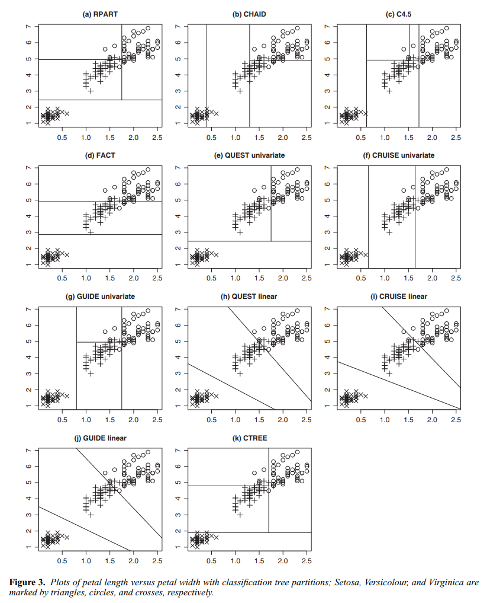
Over the years, a lot of variants of the above procedure have been developed. Even a coarse survey is beyond the scope of the class, but Loh (2014) is a nice survey.
Some variants include:
- More complex decision rules in a leaf (e.g. affine rules)
- Multiple splits per node
- Rules for whether or not to make a particular split (e.g. using statistical significance)
- Different measures of node purity
- Different pruning mechanisms (including Bayesian methods!)